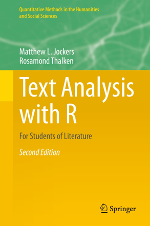
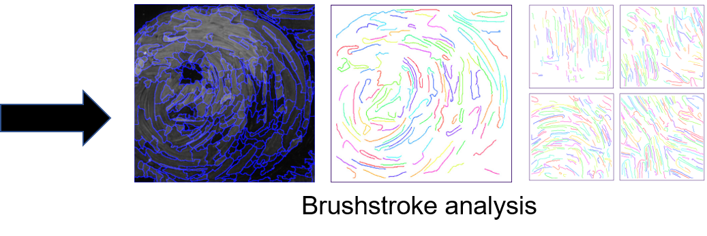
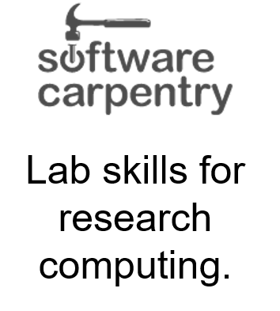
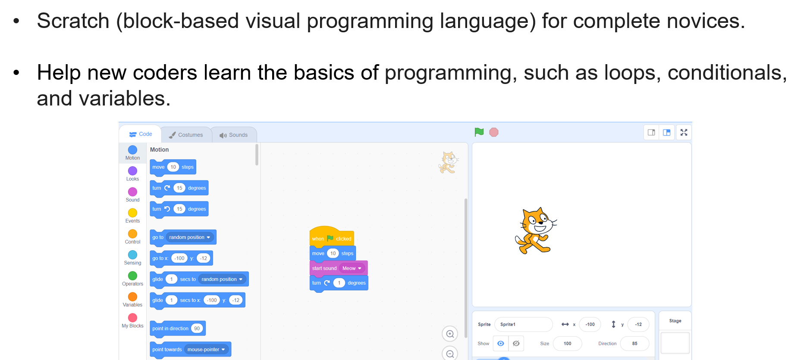
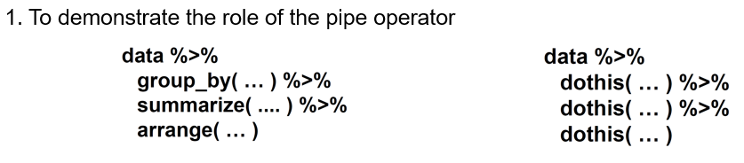
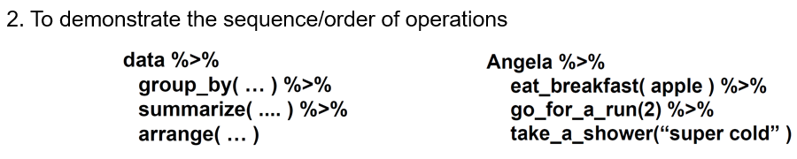
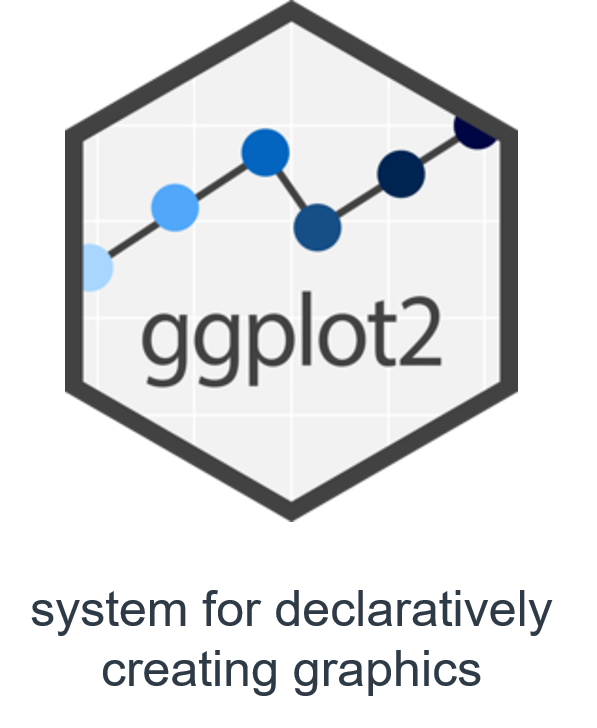

Developing library-based computational research skill instruction programs
Overall Goal
To outline a methodology for developing a computational research skill instruction program centered in libraries that will support learners with diverse disciplinary and educational backgrounds.
Outline
- Importance of computational research skills
- Effective teaching of computational research skills
- Sample lesson and problem
- Challenges associated with teaching computational research skills
- Conclusions
Importance of Computational Research Skills
Importance of Computational Research Skills
Why are computational research skills important for everyone?
- “Computational thinking is a fundamental skill for everyone, not just computer scientists.” (Wing, 2006)
Importance of Computational Research Skills
Why are computational research skills important for everyone?
- Major components of computational thinking include:
- Decomposition – break down a complex problem to multiple simpler problems.
- Pattern recognition – identify patterns in the data or information.
Importance of Computational Research Skills
Why are computational research skills important for everyone?
- Major components of computational thinking include:
- Abstraction – identify and use the relevant aspects of the problem.
- Algorithmic thinking – design algorithms to solve problems.
Importance of Computational Research Skills
Why are computational research skills important for everyone?
- New career opportunities and increased competitiveness in the job market.
- Employment of software developers is projected to grow by 25% (~400k jobs) between 2021 and 2031 (Bureau of Labor Statistics).
Importance of Computational Research Skills
Why are computational research skills important for everyone?
- Subject-matter experts with computational research skills are required to build new tools/technologies. Examples include:
- Computational linguists – develop new language-learning apps.
- Data journalists – develop fact-checking and misinformation detectors.
Importance of Computational Research Skills
Where can computational research be applied in the humanities?
Text analysis for Literature Students

Importance of Computational Research Skills
Where can computational research be applied in the humanities?
- Text analysis for Literature Students

Importance of Computational Research Skills
Where can computational research be applied in the humanities?
- Image Processing for Artist Identification (useful in Fine Arts)


Importance of Computational Research Skills
Where can computational research be applied in the humanities?
- Sentiment Analysis and Social Media (useful in Political Science & Journalism)

Importance of Computational Research Skills
Where can computational research be applied in the humanities?
| Computational Research Skill | Humanities Research Field |
|---|---|
| Text Analysis | Ancient and Modern Languages |
| Data wrangling of census data | History and Political Science |
| Image processing | Art History and Film Studies |
Importance of Computational Research Skills
Where can computational research be applied in the humanities?
| Computational Research Skill | Humanities Research Field |
|---|---|
| Spatial data analysis | Geography |
| Audio analysis | Music |
Importance of Computational Research Skills
What computational research skills are important?
- This can be determined with a needs analysis using:
- Surveys and Questionnaires sent to humanities departments,
- Literature reviews focused on computing education research,
- Interviews with faculty and staff from humanities departments.
Summary
- Computational research skills are essential for everyone.
- Humanities students can greatly benefit from computational research skills by:
- Exploring new research directions, and,
- Increasing their employment options.
Effective teaching of computational research skills
Effective teaching of computational research skills
Recognize the diversity of needs

Effective teaching of computational research skills
What activities should the instruction program focus on?
- Workshops - where the most common computational tasks and the needs identified by graduate students are taught.
- Office hours - supervised by an undergraduate/graduate student with a background in computational research.
Effective teaching of computational research skills
What activities should the instruction program focus on?
- Mentoring - pair humanities graduate students with computational science students.
- Bootcamps - focused on specific data analysis tools/programs.
- Journal/Data clubs - where new and relevant tools, techniques, and software packages will be demonstrated.
Effective teaching of computational research skills
- A number of independent initiatives exist to train the general public in basic data and computational skills. These include:
Effective teaching of computational research skills
- A number of independent initiatives exist to train the general public in basic data and computational skills. These include:


Effective teaching of computational research skills
- A number of independent initiatives exist to train the general public in basic data and computational skills. These include:

Effective teaching of computational research skills
- A number of independent initiatives exist to train the general public in basic data and computational skills. These include:

Effective teaching of computational research skills
What should novice coders learn? (My personal opinion)
- Scratch (block-based visual programming language) for complete novices.
- Help new coders learn the basics of programming, such as loops, conditionals, and variables.

Effective teaching of computational research skills
What should novice coders learn? (My personal opinion)

Effective teaching of computational research skills
Key points for teaching novice coders

Effective teaching of computational research skills
Key points for teaching novice coders
- Use live coding.
- Embrace coding errors as an opportunity to teach debugging.
- Use “worked examples” and pace learning to avoid cognitive overload.
- Encourage working in pairs and group coding.
- Promote daily practice.
Effective teaching of computational research skills
Key points for teaching novice coders
- Learn student personas and adapt lessons to suit each student.
- Give effective feedback that motivates.
- Create learning goals for students.
- Use real-life tasks relevant to student research.
Sample Lesson and Problem
Sample Lesson and Problem
Data Manipulation in R


Sample Lesson and Problem
Data Manipulation in R


Sample Lesson and Problem
Data Visualization in R


Challenges associated with teaching computational research skills
Challenges associated with teaching computational research skills
Barriers to overcome include:
- Attitudes towards coding.
- The variety of needs (even within humanities):
- Example: Psychology vs Literature.
- Over-reliance on no-code commercially available tools and a lack of willingness to change.
Challenges associated with teaching computational research skills
What students should avoid:
- Learning too much at once without mastering the basics.
- Continuously working on tutorials but not applying knowledge to personal projects.
- Copy-and-pasting code rather than understanding why the code was used.
- Learning multiple tools/programs simultaneously (such as Python, R, and Javascript).
Conclusions
Conclusions
- Computational thinking is for everyone.
- Computational research skills can be very helpful for humanities students.
- Various initiatives such as the Carpentries and CodeRefinery have devised effective blueprints for teaching.
Conclusions
- Novices should consider starting with visual block-based programming.
- There is a need to teach students effective learning practices and overcome the barriers to coding.
- Teaching should be adapted to different student abilities and should include motivational feedback.